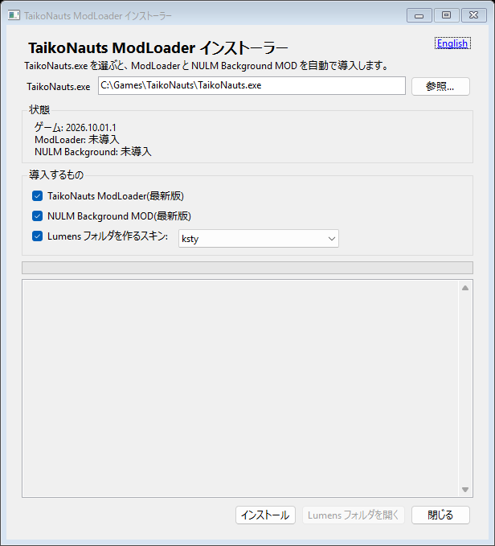
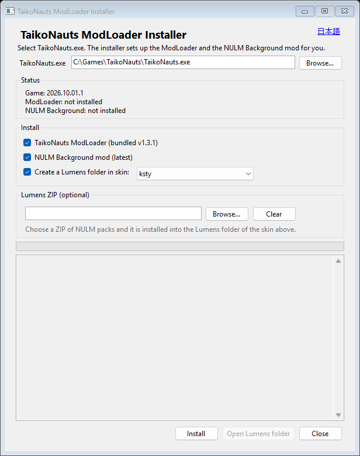

TaikoNauts.exe を選んで、
ボタンを 1 回押すだけ。
Pick TaikoNauts.exe,
press one button.
TaikoNauts の MOD を動かす土台「ModLoader」と、演奏画面の背景に NULM を流す「NULM Background MOD」を、自動で導入するインストーラーです。
An installer that sets up the ModLoader (the base that runs TaikoNauts mods) and the NULM Background mod (plays NULM animations as the play-screen background) for you.
使い方
How to use it
最初に、TaikoNauts と Mod Manager を終了しておいてください。
First, close TaikoNauts and the Mod Manager.

1 2 3 4 5
1 2 3 4 5-
TaikoNauts.exe を選ぶ。
「参照...」を押して、ゲームのフォルダにある
TaikoNauts.exeを選びます。ウィンドウに、ファイルをドラッグ&ドロップしてもかまいません。前回選んだ場所は覚えています。Select TaikoNauts.exe.
Press “Browse...” and pick
TaikoNauts.exein the game folder. You can also drop the file onto the window. The last choice is remembered. -
入れるものを確認する。
「状態」に、いま入っているものが出ます。ふだんは、すべてチェックしたままで大丈夫です。
Lumensを作るスキンは、使用中のスキンが最初から選ばれています。Check what to install.
“Status” shows what is already there. Usually leave everything ticked. The skin in use is preselected for the
Lumensfolder. -
NULM の ZIP があれば、選ぶ(任意)。
「Lumens の ZIP」の「参照...」で、NULM パックの ZIP を選びます(ウィンドウへのドラッグ&ドロップも可)。中身は、上で選んだスキンの
Lumensに自動で入ります。ZIP がなければ、飛ばしてかまいません。リンク先のファイルは、このリポジトリの管理外です。権利を持つものだけをお使いください。
Choose a NULM ZIP if you have one (optional).
Use “Browse...” under “Lumens ZIP” to pick a ZIP of NULM packs (or drop it onto the window). Its packs go into the
Lumensfolder of the skin chosen above automatically. Skip this if you have no ZIP.The file behind this link is not managed by this repository. Use only what you have the right to use.
-
「インストール」を押す。
ダウンロードと導入が進み、ログに経過が出ます。数分かかることがあります(ModLoader は約 63 MB)。「完了しました」と出れば終わりです。
Press “Install”.
It downloads and installs, and the log shows progress. It can take a few minutes (the ModLoader is about 63 MB). You are done when it says it finished.
-
ゲームを起動する(ZIP を使わなかった人は、先に NULM を置く)。
ZIP を選んだ人は、そのままゲームを起動できます。選ばなかった人は、「Lumens フォルダを開く」で開く場所に、NULM のパックを、パックごとに 1 つのフォルダで自分で置きます。
Start the game (if you used no ZIP, put NULM packs in first).
If you chose a ZIP you can start the game right away. Otherwise put your NULM packs, one folder per pack, into the folder that “Open Lumens folder” opens.
config.json や、置いた NULM のパックは消えません。config.json or your NULM packs.